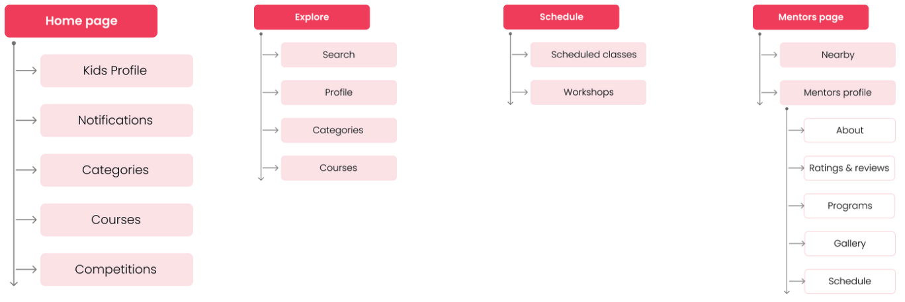

| Case Study: PRO-DUCK-TIVITY |
The goal of this case study was to truly understand diverse user experience problems the Spirit Airlines mobile app has, and ultimately, to solve these issues by designing more accessible and user friendly interfaces. | ||
|---|---|---|---|
| Role
UX Research Interface Design Prototyping |
Team
Self-Directed |
Year
2023 |
|
| Problem Statement | The goal of this case study was to truly understand diverse user experience problems the Spirit Airlines mobile app has, and ultimately, to solve these issues by designing more accessible and user friendly interfaces. | ||
|---|---|---|---|
| Solution | The goal of this case study was to truly understand diverse user experience problems the Spirit Airlines mobile app has, and ultimately, to solve these issues by designing more accessible and user friendly interfaces. | ||
|---|---|---|---|
| Design Process |
|---|
|
| Discover Phase: | Used the Design Thinking approach for solving this problem. To practice design thinking we followed the below process. | ||
|---|---|---|---|
| Quantitative Research | Used the Design Thinking approach for solving this problem. To practice design thinking we followed the below process. | ||
|
|||
| Define Phase: | Used the Design Thinking approach for solving this problem. To practice design thinking we followed the below process. | ||
|---|---|---|---|
 |
|||
| Ideation Phase: | Used the Design Thinking approach for solving this problem. To practice design thinking we followed the below process. | ||
|---|---|---|---|
|  | |||
| Design Phase: | Below are the steps I followed during the design phase. | ||
|---|---|---|---|
|
|||
| Wireframes | Low-fidelity prototype testing allowed me to better understand how users expected to complete the tasks I was focusing on. By studying their touch and swipe gestures — and more importantly, having a dialogue with them about what they expected and when — I knew which adjustments needed to be made to lay the foundation for a more fully realized high fidelity prototype. Small details such as actionable and consistent iconography, and consistent paths to get back, would become important elements of the design system. | ||
|---|---|---|---|
| Prototype | I created high-fidelity wireframes by applying established styles. It further lets me to examine the overall aesthetic feelings and visual balance of the application. | ||
|---|---|---|---|